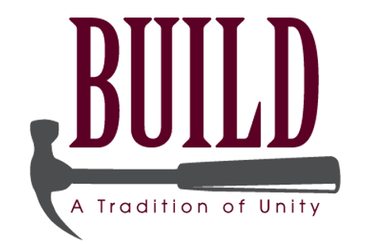

Howdy!
I'm Anthony Pasala, a computer science major
from Houston, TX. I mainly practice software/web
development, but I'm hoping for
a career
in Machine Learning/Artificial Intelligence. I see
myself going on to graduate school in computer
science in a few years, most likely pursuing a ML
engineer or researcher role.
my projects.
Over the upcoming semesters, I plan on taking ML/AI courses, so I started the Deep Learning, Machine Learning, and MLOps specializations provided by deeplearning.ai on Coursera.
 Through these courses, I'm learning how to develop
systems and best practices in that field with Python
and its tools like NumPy, Pandas, and TensorFlow. So
far, I made a simple binary cat classifier program
in python using principle deep learning concepts,
and I'm learning about various algorithms like Adam
optimization and types of neural networks.
Through these courses, I'm learning how to develop
systems and best practices in that field with Python
and its tools like NumPy, Pandas, and TensorFlow. So
far, I made a simple binary cat classifier program
in python using principle deep learning concepts,
and I'm learning about various algorithms like Adam
optimization and types of neural networks.
However, learning about topics through just courses isn’t enough to fully master them, so I also signed up for the AI4ALL program hosted at Texas A&M. Outside of the fudamentals, the program also delves into ethics of AI development, sparking my interest. After successful completion, I'll participate in their provided mentorship program to gain experience.
I’m also part of the Aggie Challenge research class, and my work involves web application development for the lab's SpaceCRAFT application. The web app's requirements include an authentication and database system for users and organizations, allowing for different user role to manage restrictions and permissions through SpaceCRAFT's API.
I primarily use Node.js, Express.js and PostgreSQL with TypeScript for backend logistics development and server functionality. Node.js provides npm to manage packages like Jestjs, Axios, @databases, Testcontainers, and Luxon to integrate with the backend. For frontend development, I use React with the modern Redux Toolkit develop the UI and connect it Express.js routes.
 For implementing DevOps or CI/CD, I use Jenkins with
Jestjs to manage and run repository, model,
integration, and API test cases for the backend.
Docker provides an intituive virtualization toolkit
for packaging environments like the PostgreSQL
server with Flyway for database migration and Redis
for a cache system. In the future, I'll learn how to
work with AWS and NGINX for the website's
deployment.
For implementing DevOps or CI/CD, I use Jenkins with
Jestjs to manage and run repository, model,
integration, and API test cases for the backend.
Docker provides an intituive virtualization toolkit
for packaging environments like the PostgreSQL
server with Flyway for database migration and Redis
for a cache system. In the future, I'll learn how to
work with AWS and NGINX for the website's
deployment.
I also manage a subteam with my work in the lab, so I became familiar various software development models like the iterative method and Agile as well as efficient folder structures to guide the development process.
my resume (PDF).
my skills.
- Languages: Java, Python, C++, C, JavaScript, TypeScript, HTML/CSS, PostgreSQL, MySQL, Latex
- Web development: Node.js, Express.js, React.js, Redux Toolkit, Jestjs, Axios, Testcontainers, @databases, Luxon
- DevOps tools: Git, NGINX, Docker, Redis, Apache Kafka, Flyway, Jenkins, AWS
my interests.
Due to
current advances
in ML and AI tools and their capabilities, I grew
more and more interested in pursuing that field of
study because it provides the means of addressing
issues like
understanding non-human speech
and
predicting medical necessities.

As evident in my skills section, I'm also interested in general software design and development: learning about best practices and tools to employ them as means of constructing and presenting current and future problems I plan to take on.
current & future.
Most of my volunteer service experience comes from high school. I’ve made awareness posters and volunteered at various events with school clubs like the National Honor Society, created a STEM magazine for students in the district, and taught science to elementary school kids weekly after school.
I volunteered over 50 hours at the St. Laurence Parish Library, where I helped I with refurnishing and sorting books. All kinds of people come in and volunteer there, so it was fun getting to know a lot of them. I also volunteered at and supervised food/shoe drives for the church.
 I'll continue volunteering in college via TAMU BUILD, an organization that takes on various projects like converting shipping containers to portable medical clinics and sending them around the world.